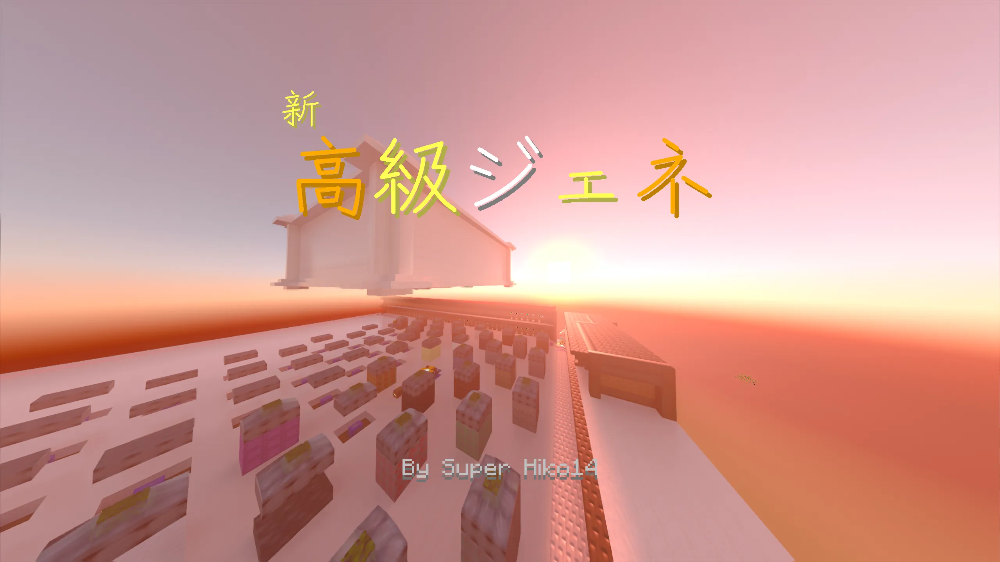

ようこそ!
新 高級ジェネ 公式サイトへ!

このサーバーの長所
やりこみ要素が豊富です。称号だけでも8個あります!(現在時点)
称号以外にも、実績やジェネの通貨、見栄えの良い建築などで、モチベーションがとてもあがります!
これはマイクラだけにとどまらず、オープンチャットを展開しています!下の方にスクロールするとリンクがあります。是非参加してみてください!
マインクラフト以外のサービス
マインクラフト以外のサービスで例えばこのサイトだったり、okakiが作った公認サイトもあります。
(サイト上にはSuper Hiko14が依頼したことになっていますが決して依頼していないのでご注意を!)
オープンチャットではライブトークで、雑談したり、投票を行ったり、今日、いつ開くかや遅れるなどの知らせをあらかじめ見ることができます!